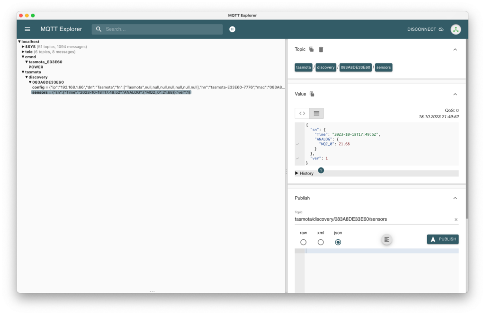

Главная страница › Микроконтроллеры › ESP8266 › Установка Tasmota на ESP8266
Установка Tasmota на ESP8266
ESP8266
18 октября 2023
5849
Tasmota — популярная прошивка для устройств на базе микроконтроллера ESP. Она позволяет, через удобный web интерфейс настроить получение данных с сенсоров. А также отправку данных дальше в MQTT. Откуда ее могут забирать другие системы. На данный момент у меня есть неиспользуемая Wemos D1 mini. На ней и покажу, как быстро можно установить прошивку.
Добавлен новый способ онлайн прошивки. Перейдите в прошивку онлайн, подключите ESP и за пару кликов прошивка будет установлена!
Первым делом подключаем контроллер к компьютеру и переходим по ссылке Install Tasmota.
На данной странице выбираем необходимую прошивку и свою версию контроллера. Для русского языка выбирайте «Tasmota RU».
После чего нажимаем синюю кнопку connect и выбираем подключенный контроллер.
Далее нас спрашиваю — «Хотим ли мы очистить все данные с контроллера?» Обязательно ставим галочку и нажимаем далее (next). Даже если вы только купили ESP и пытаетесь установить, то очищать ее все равно надо. Зачастую на заводах устанавливают тестовую прошивку, чтобы проверить работает контроллер или нет. И если попытаться установить Tasmota поверх существующей прошивки, то может произойти ошибка.
Дожидаемся процесса установки. Не выключайте компьютер и не отсоединяйте ESP. В противном случае придется повторять процедуру установки еще раз.
Подключить WIFI можно двумя способами. Если вы не закрывали страницу с прошивкой, то после установки и нажатия на далее (next) появляется форма, где можно ввести логин и пароль.
А если у вас по какой-то причине нет этой формы, то необходимо подключиться к WIFI точки доступа. Она будет создана автоматический при старте контроллера в первый раз. Примерное название tasmota-E33E60-7776 (цифры будут отличаться).
В ней появится такая же форма, где необходимо ввести название вашей домашней WIFI сети и пароль от нее.
Для того, чтобы убедиться в правильной работе, давайте подключим датчик. Для примера я возьму MQ-135.
Переходим в «Настройки MQTT» и заполняем все необходимые поля.
После чего сохраняем изменения и ждем пока перезагрузится ESP. Как только микроконтроллер загрузится, в выбранный топик будут отправляться данные.
Каждый раз заходить в web интерфейс и смотреть показатели не очень удобно. Для этого можно добавить Tasmota в Home Assistant. Тем самым появятся почти безграничные возможности в создании автоматизаций.
Был ли полезен материал?
Мне очень важно получать обратную связь. Пожалуйста, оцените материал. Так я пойму в какую сторону его стоит изменить.
ДаНет